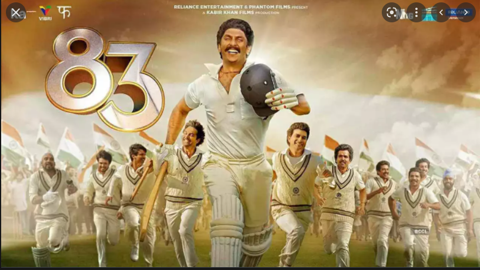
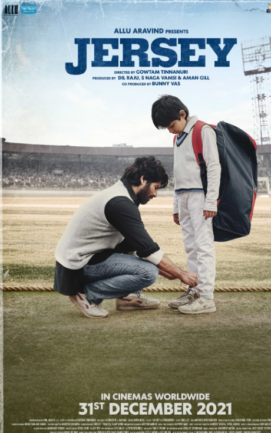

| non avengers movies | review |
|  | What a movie ! The film is based on India's victory at the 1983 World Cup and boasts of a terrific cast. This is a real life story and for Indians this was a 00000000moment of pride |
|  | We’re introduced to an Arjun Talwar (Shahid Kapoor), who’s unemployed, a middle-aged father whose love for cricket is clearly visible because even his kid has the same dream and following that he asks his father for gifting him a jersey. While Arjun struggles to fulfil such a trivial wish of his son, Mrs Talwar, Vidya (Mrunal Thakur) wants him to get his old job back, but Arjun wants to step back into the field of his long-lost dreams. |